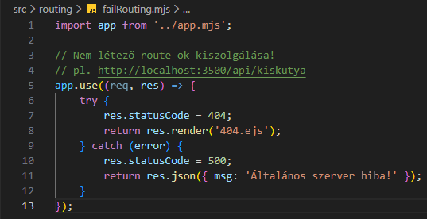
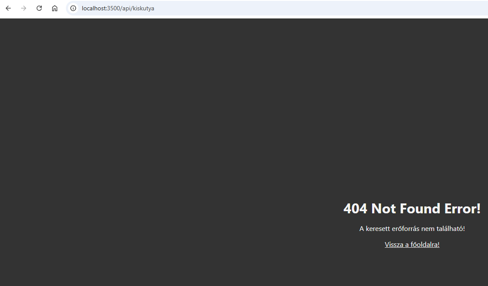
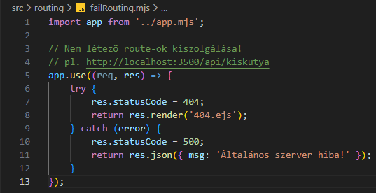
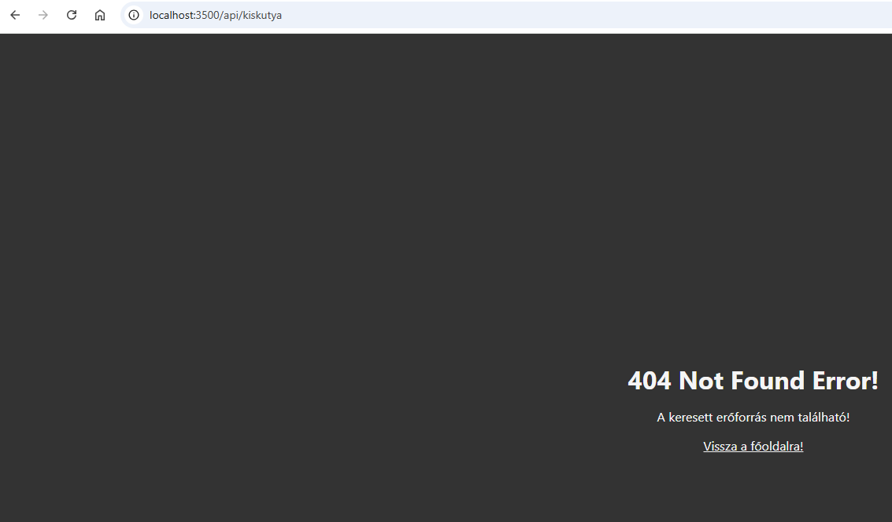
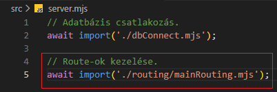

Nem létező route - bevezetés
Ebben a részben azzal foglalkozunk, hogy mit küldjön vissza a szerver, ha olyan URL-t kap, amiben nincs olyan route-t amit kezelni tudna.
-
Hozzuk létre a
failRouting.mjsállományt azsrc/routingmappában. , , és
 
-
import app from '../app.mjs';- azappobjektum alapértelmezett beimportálása. -
app.use((req, res), => {...});- ausemiddlewaresegítségével egy speciálisroutekezelő függvényt hívunk meg. Nincs megadva benneroute!!! -
try { res.statusCode = 404; return res.render('404.ejs'); }- a "sikeres" ág 404-eshttp hibakód-dal. -
catch (error) { res.statusCode = 500; return res.json({ msg: 'Általános szerver hiba!' }); }- a "sikertelen" ág 500-ashttp hibakód-dal.
-
-
Szerkesszük újra a
server.mjsállományt. és
-
await import('./routing/failRouting.mjs');- importáljuk be afailRouting.mjs-ben létrehozottpromise-t.
-
-
Az eddigi munka letölthető formátumban:
backend_02.rar
Letöltés és kicsomagolás után aGitBashfelületen abackendmappában adjuk ki a következő utasítást:
npm install -
A webszerver futtatásához adjuk ki a következő utasítást a
GitBashfelületen:
node --watch ./src/server.mjs